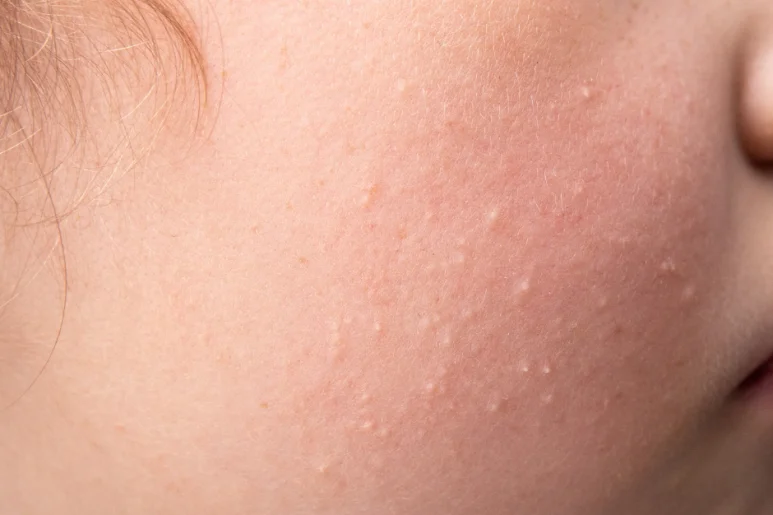

MISOPIN MILIA
비립종이란?
눈가를 비롯해 얼굴에 생겨나는 작은 좁쌀 같은 흰색 돌기이며
피지 분비가 활발하거나 얇은 피부 부위에 잘 생기는 일종의 피지 낭종입니다.

Clinic Options
시술 종류
Aftercare Instructions
시술 후 주의사항
비립종 관리를 받은 후에는 다음과 같은 관리가 중요합니다.
01
시술 부위는 손으로 만지지 않기
02
이틀간 세안은 가볍게
03
자극적인 화장품은 피하기
04
각질 제거 및 마사지는 최소 1주일 후부터
05
자외선 차단은 철저히
06
딱지가 생기더라도 억지로 제거하지 않기
시술 후 일시적인 붉어짐, 따끔거림, 건조감이 나타날 수 있습니다.
개인차에 따라 회복 속도가 다를 수 있으므로 꾸준한 관리가 중요합니다.